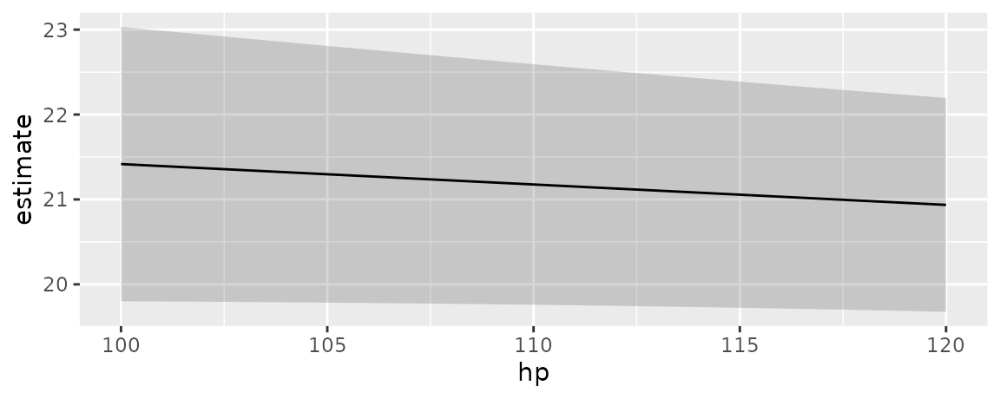

In the context of this package, “marginal means” refer to the values obtained by this three step process:
- Construct a “grid” of predictor values with all combinations of categorical variables, and where numeric variables are held at their means.
- Calculate adjusted predictions for each cell in that grid.
- Take the average of those adjusted predictions across one dimension of the grid to obtain the marginal means.
For example, consider a model with a numeric, a factor, and a logical predictor:
library(marginaleffects)
dat <- mtcars
dat$cyl <- as.factor(dat$cyl)
dat$am <- as.logical(dat$am)
mod <- lm(mpg ~ hp + cyl + am, data = dat)Using the predictions function, we set the
hp variable at its mean and compute predictions for all
combinations for am and cyl:
p <- predictions(
mod,
newdata = datagrid(am = unique, cyl = unique))For illustration purposes, it is useful to reshape the above results:
| cyl | TRUE | FALSE | Marginal means by cyl |
|---|---|---|---|
| 6 | 21.0 | 16.9 | 19.0 |
| 4 | 25.0 | 20.8 | 22.9 |
| 8 | 21.4 | 17.3 | 19.4 |
| Marginal means by am | 22.5 | 18.3 |
The marginal means by am and cyl are
obtained by taking the mean of the adjusted predictions across cells.
The marginal_means function gives us the same results
easily:
marginal_means(mod)
#>
#> Term Value Mean Std. Error z Pr(>|z|) 2.5 % 97.5 %
#> cyl 4 22.9 1.357 16.9 <0.001 20.2 25.5
#> cyl 6 19.0 1.073 17.7 <0.001 16.9 21.1
#> cyl 8 19.4 1.377 14.1 <0.001 16.7 22.1
#> am FALSE 18.3 0.785 23.3 <0.001 16.8 19.9
#> am TRUE 22.5 0.834 26.9 <0.001 20.8 24.1
#>
#> Results averaged over levels of: hp, cyl, am
#> Columns: term, value, estimate, std.error, statistic, p.value, conf.low, conf.highWe could obtain the same results with the by argument of
the predictions() function, which allows us to marginalize
across some predictors:
predictions(
mod,
by = "am",
newdata = datagrid(am = unique, cyl = unique))
#>
#> am Estimate Std. Error z Pr(>|z|) 2.5 % 97.5 %
#> FALSE 18.3 0.785 23.3 <0.001 16.8 19.9
#> TRUE 22.5 0.834 26.9 <0.001 20.8 24.1
#>
#> Columns: am, estimate, std.error, statistic, p.value, conf.low, conf.high
predictions(
mod,
by = "cyl",
newdata = datagrid(am = unique, cyl = unique))
#>
#> cyl Estimate Std. Error z Pr(>|z|) 2.5 % 97.5 %
#> 4 22.9 1.36 16.9 <0.001 20.2 25.5
#> 6 19.0 1.07 17.7 <0.001 16.9 21.1
#> 8 19.4 1.38 14.1 <0.001 16.7 22.1
#>
#> Columns: cyl, estimate, std.error, statistic, p.value, conf.low, conf.highThe same results can be achieved using the powerful
emmeans package:
library(emmeans)
emmeans(mod, specs = "cyl")
#> cyl emmean SE df lower.CL upper.CL
#> 4 22.9 1.36 27 20.1 25.7
#> 6 19.0 1.07 27 16.8 21.2
#> 8 19.4 1.38 27 16.5 22.2
#>
#> Results are averaged over the levels of: am
#> Confidence level used: 0.95
emmeans(mod, specs = "am")
#> am emmean SE df lower.CL upper.CL
#> FALSE 18.3 0.785 27 16.7 19.9
#> TRUE 22.5 0.834 27 20.8 24.2
#>
#> Results are averaged over the levels of: cyl
#> Confidence level used: 0.95Marginal Means vs. Average Predictions
What should scientists report? Marginal means or average predictions?
Many analysts ask this question, but unfortunately there isn’t a single answer. As explained above, marginal means are a special case of predictions, made on a perfectly balanced grid of categorical predictors, with numeric predictors held at their means, and marginalized with respect to some focal variables. Whether the analyst prefers to report this specific type of marginal means or another kind of average prediction will depend on the characteristics of the sample and the population to which they want to generalize.
After reading this vignette and the discussion of
emmeans in the Alternative
Software vignette, you may want to consult with a statistician to
discuss your specific real-world problem and make an informed
choice.
Interactions
By default, the marginal_means() function calculates
marginal means for each categorical predictor one after the other. We
can also compute marginal means for combinations of categories
by setting cross=TRUE:
library(lme4)
dat <- "https://vincentarelbundock.github.io/Rdatasets/csv/Stat2Data/Titanic.csv"
dat <- read.csv(dat)
titanic <- glmer(
Survived ~ Sex * PClass + Age + (1 | PClass),
family = binomial,
data = dat)Regardless of the scale of the predictions (type
argument), marginal_means() always computes standard errors
using the Delta Method:
marginal_means(
titanic,
type = "response",
variables = c("Sex", "PClass"))
#>
#> Term Value Mean Std. Error z Pr(>|z|) 2.5 % 97.5 %
#> PClass 1st 0.708 0.0273 25.95 <0.001 0.654 0.761
#> PClass 2nd 0.511 0.0235 21.76 <0.001 0.465 0.557
#> PClass 3rd 0.242 0.0281 8.59 <0.001 0.187 0.297
#> Sex female 0.738 0.0207 35.68 <0.001 0.698 0.779
#> Sex male 0.235 0.0203 11.62 <0.001 0.196 0.275
#>
#> Results averaged over levels of: Sex, PClass
#> Columns: term, value, estimate, std.error, statistic, p.value, conf.low, conf.highWhen the model is linear or on the link scale, it also produces confidence intervals:
marginal_means(
titanic,
type = "link",
variables = c("Sex", "PClass"))
#>
#> Term Value Mean Std. Error z Pr(>|z|) 2.5 % 97.5 %
#> PClass 1st 1.6307 0.271 6.028 <0.001 1.100 2.161
#> PClass 2nd 0.0997 0.211 0.472 0.637 -0.314 0.513
#> PClass 3rd -1.2792 0.155 -8.255 <0.001 -1.583 -0.975
#> Sex female 1.6407 0.206 7.984 <0.001 1.238 2.043
#> Sex male -1.3399 0.124 -10.828 <0.001 -1.582 -1.097
#>
#> Results averaged over levels of: Sex, PClass
#> Columns: term, value, estimate, std.error, statistic, p.value, conf.low, conf.highIt is easy to transform those link-scale marginal means with
arbitrary functions using the transform argument:
marginal_means(
titanic,
type = "link",
transform = insight::link_inverse(titanic),
variables = c("Sex", "PClass"))
#>
#> Term Value Mean Pr(>|z|) 2.5 % 97.5 %
#> PClass 1st 0.836 <0.001 0.750 0.897
#> PClass 2nd 0.525 0.637 0.422 0.626
#> PClass 3rd 0.218 <0.001 0.170 0.274
#> Sex female 0.838 <0.001 0.775 0.885
#> Sex male 0.208 <0.001 0.170 0.250
#>
#> Results averaged over levels of: Sex, PClass
#> Columns: term, value, estimate, p.value, conf.low, conf.highmarginal_means() defaults to reporting EMMs for each
category individually, without cross-margins:
titanic2 <- glmer(
Survived ~ Sex + PClass + Age + (1 | PClass),
family = binomial,
data = dat)
marginal_means(
titanic2,
variables = c("Sex", "PClass"))
#>
#> Term Value Mean Std. Error z Pr(>|z|) 2.5 % 97.5 %
#> PClass 1st 0.707 0.0289 24.5 <0.001 0.650 0.763
#> PClass 2nd 0.494 0.0287 17.2 <0.001 0.437 0.550
#> PClass 3rd 0.291 0.0268 10.9 <0.001 0.238 0.344
#> Sex female 0.741 0.0240 30.8 <0.001 0.694 0.788
#> Sex male 0.253 0.0203 12.5 <0.001 0.213 0.293
#>
#> Results averaged over levels of: Sex, PClass
#> Columns: term, value, estimate, std.error, statistic, p.value, conf.low, conf.highWe can force the cross:
marginal_means(
titanic2,
cross = TRUE,
variables = c("Sex", "PClass"))
#>
#> Mean Std. Error z Pr(>|z|) 2.5 % 97.5 %
#> 0.9288 0.0161 57.71 <0.001 0.8973 0.9604
#> 0.7819 0.0357 21.93 <0.001 0.7120 0.8518
#> 0.5118 0.0458 11.17 <0.001 0.4220 0.6017
#> 0.4844 0.0468 10.35 <0.001 0.3926 0.5761
#> 0.2051 0.0308 6.66 <0.001 0.1448 0.2655
#> 0.0702 0.0135 5.18 <0.001 0.0436 0.0967
#>
#> Columns: Sex, PClass, estimate, std.error, statistic, p.value, conf.low, conf.highGroup averages with the by argument
We can collapse marginal means via averaging using the
by argument:
dat <- mtcars
dat$am <- factor(dat$am)
dat$vs <- factor(dat$vs)
dat$cyl <- factor(dat$cyl)
mod <- glm(gear ~ cyl + vs + am, data = dat, family = poisson)
by <- data.frame(
by = c("(4 & 6)", "(4 & 6)", "(8)"),
cyl = c(4, 6, 8))
marginal_means(mod, by = by, variables = "cyl")
#>
#> By Mean Pr(>|z|) 2.5 % 97.5 %
#> (4 & 6) 3.86 <0.001 2.86 5.22
#> (8) 3.59 <0.001 2.11 6.13
#>
#> Results averaged over levels of: vs, am, cyl
#> Columns: by, estimate, p.value, conf.low, conf.highAnd we can use the hypothesis argument to compare those
new collapsed subgroups:
marginal_means(mod, by = by, variables = "cyl", hypothesis = "pairwise")
#>
#> Term Mean Pr(>|z|) 2.5 % 97.5 %
#> (4 & 6) - (8) 1.07 0.848 0.515 2.24
#>
#> Results averaged over levels of: vs, am, cyl
#> Columns: term, estimate, p.value, conf.low, conf.highCustom Contrasts and Linear Combinations
See the vignette on Custom Contrasts and Combinations
Tidy summaries
The summary, tidy, and glance
functions are also available to summarize and manipulate the
results:
mm <- marginal_means(mod)
tidy(mm)
#> # A tibble: 7 × 6
#> term value estimate p.value conf.low conf.high
#> <chr> <fct> <dbl> <dbl> <dbl> <dbl>
#> 1 cyl 4 3.83 2.34e- 8 2.39 6.13
#> 2 cyl 6 3.90 1.57e-12 2.67 5.68
#> 3 cyl 8 3.59 2.66e- 6 2.11 6.13
#> 4 am 0 3.27 3.96e-15 2.43 4.40
#> 5 vs 0 3.79 1.88e-12 2.62 5.50
#> 6 am 1 4.34 6.83e-19 3.14 6.01
#> 7 vs 1 3.75 5.82e-10 2.47 5.69
glance(mm)
#> # A tibble: 1 × 7
#> aic bic r2.nagelkerke rmse nobs F logLik
#> <dbl> <dbl> <dbl> <dbl> <int> <dbl> <logLik>
#> 1 113. 120. 0.672 0.437 32 0.737 -51.50168
summary(mm)
#>
#> Term Value Mean Pr(>|z|) 2.5 % 97.5 %
#> cyl 4 3.83 <0.001 2.39 6.13
#> cyl 6 3.90 <0.001 2.67 5.68
#> cyl 8 3.59 <0.001 2.11 6.13
#> am 0 3.27 <0.001 2.43 4.40
#> vs 0 3.79 <0.001 2.62 5.50
#> am 1 4.34 <0.001 3.14 6.01
#> vs 1 3.75 <0.001 2.47 5.69
#>
#> Results averaged over levels of: cyl, vs, am
#> Columns: term, value, estimate, p.value, conf.low, conf.highThanks to those tidiers, we can also present the results in the style
of a regression table using the
modelsummary package. For examples, see the
tables and plots vignette.
Case study: Multinomial Logit
This example requires version 0.2.0 of the
marginaleffects package.
To begin, we generate data and estimate a large model:
library(nnet)
library(marginaleffects)
set.seed(1839)
n <- 1200
x <- factor(sample(letters[1:3], n, TRUE))
y <- vector(length = n)
y[x == "a"] <- sample(letters[4:6], sum(x == "a"), TRUE)
y[x == "b"] <- sample(letters[4:6], sum(x == "b"), TRUE, c(1 / 4, 2 / 4, 1 / 4))
y[x == "c"] <- sample(letters[4:6], sum(x == "c"), TRUE, c(1 / 5, 3 / 5, 2 / 5))
dat <- data.frame(x = x, y = factor(y))
tmp <- as.data.frame(replicate(20, factor(sample(letters[7:9], n, TRUE))))
dat <- cbind(dat, tmp)
void <- capture.output({
mod <- multinom(y ~ ., dat)
})Try to compute marginal means, but realize that your grid won’t fit in memory:
marginal_means(mod, type = "probs")
#> Error: You are trying to create a prediction grid with more than 1 billion rows, which is likely to exceed the memory and computational power available on your local machine. Presumably this is because you are considering many variables with many levels. All of the functions in the `marginaleffects` package include arguments to specify a restricted list of variables over which to create a prediction grid.Use the variables and variables_grid
arguments to compute marginal means over a more reasonably sized
grid:
marginal_means(mod,
type = "probs",
variables = c("x", "V1"),
variables_grid = paste0("V", 2:3))Plot conditional marginal means
The marginaleffects package offers several functions to
plot how some quantities vary as a function of others:
-
plot_predictions: Conditional adjusted predictions – how does the predicted outcome change as a function of regressors? -
plot_comparisons: Conditional comparisons – how do contrasts change as a function of regressors? -
plot_slopes: Conditional marginal effects – how does the slope change as a function of regressors?
There is no analogous function for marginal means. However, it is
very easy to achieve a similar effect using the
predictions() function, its by argument, and
standard plotting functions. In the example below, we take these
steps:
- Estimate a model with one continuous (
hp) and one categorical regressor (cyl). - Create a perfectly “balanced” data grid for each combination of
hpandcyl. This is specified by the user in thedatagrid()call. - Compute fitted values (aka “adjusted predictions”) for each cell of the grid.
- Use the
byargument to take the average of predicted values for each value ofhp, across margins ofcyl. - Compute standard errors around the averaged predicted values (i.e., marginal means).
- Create symmetric confidence intervals in the usual manner.
- Plot the results.
library(ggplot2)
mod <- lm(mpg ~ hp + factor(cyl), data = mtcars)
p <- predictions(mod,
by = "hp",
newdata = datagrid(
model = mod,
hp = seq(100, 120, length.out = 10),
cyl = mtcars$cyl))
ggplot(p) +
geom_ribbon(aes(hp, ymin = conf.low, ymax = conf.high), alpha = .2) +
geom_line(aes(hp, estimate))